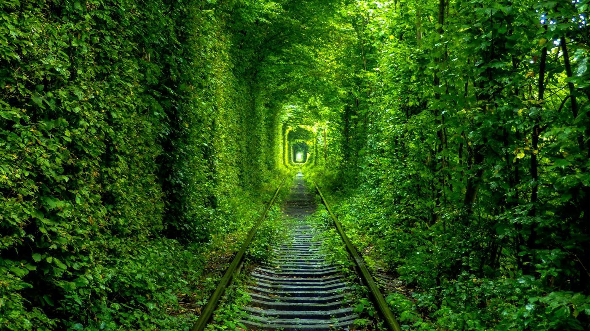

Тунель кохання
Тунель кохання - це красивий зелений тунель, який складається з дерев, які формуються природна арка над залізничною колією. Знаходиться поблизу м Клевань на Західній Україні. Тунель є популярним місцем для пар Вважається, що якщо загадати бажання, проходячи по ньому, ваш бажання збудеться.
Корисний ресурс : Тунель кохання - Цікаві факти
Хотинська фортеця
Хотинська фортеця — середньовічний замок, розташований у місті Хотин на Західній Україні. Фортеця була побудована в 13 столітті і відіграв важливу роль у битвах між Османською і Річ Посполита. Сьогодні це популярне серед туристів місце пам’ятка, яку обов’язково відвідують любителі історії.
Корисний ресурс : Хотинська фортеця - Цікаві факти
Києво-Печерська Лавра
Києво-Печерська лавра - це духовний та культурний символ України, що знаходиться в столиці країни, місті Києві. Лавра є одним з найстаріших та найбільших православних монастирів світу, заснований у XI столітті святими Антонієм та Феодосієм Печерськими.
Корисний ресурс : Києво-Печерська Лавра - Цікаві факти
Софійський собор
Софійський собор - це історична пам'ятка Києва, яка була побудована в XI столітті та є однією з найбільш визначних споруд України. Собор служив головною культовою спорудою Київської Русі та мав значну роль у розвитку української культури та історії. Він зберіг багато унікальних фресок, мозаїк та інших художніх творів, які дозволяють оцінити майстерність того часу. Софійський собор є символом Києва та України, тому він залучає до себе багато туристів з усього світу, які хочуть побачити цю унікальну пам'ятку.
Корисний ресурс : Софійський собор - Цікаві факти
Херсонес Таврійський

Херсонес Таврійський - це археологічний комплекс на березі Чорного моря, який є однією з найважливіших історичних пам'яток України. Комплекс був заснований давньогрецькими колоністами в VI столітті до н.е. та став важливим центром античної культури та торгівлі. Херсонес мав значний вплив на розвиток культури, науки та релігії, а також був місцем народження та розвитку давньоримського імператора Миколи I.
Корисний ресурс : Херсонес Таврійський - Цікаві факти
Заповідник «Кам'янець»
Заповідник "Кам'янець" - це унікальний комплекс історичних та культурних пам'яток, який розташований на території міста Кам'янець-Подільського на заході України. Заповідник складається зі збережених фрагментів стародавнього міста, зокрема з міднорізьбленої фортечної стіни, кам'яних веж та башт, міських воріт, храмів та інших релігійних споруд, які свідчать про багату історію Кам'янця-Подільського.
Корисний ресурс : Заповідник «Кам'янець» - Цікаві факти
Хортиця
Хортиця - це величезний острів, що знаходиться на річці Дніпро біля міста Запоріжжя в південній частині України. Цей острів відомий своєю багатою історією та культурними надбаннями. За часів Козацької Республіки, Хортиця була центром козацької культури, де козаки жили, боронили свої землі та проводили збори. Сьогодні, на території острова знаходяться музеї, парки, монастирі та інші історичні пам'ятки, які приваблюють багато відвідувачів з усього світу.
Корисний ресурс : Хортиця - Цікаві факти